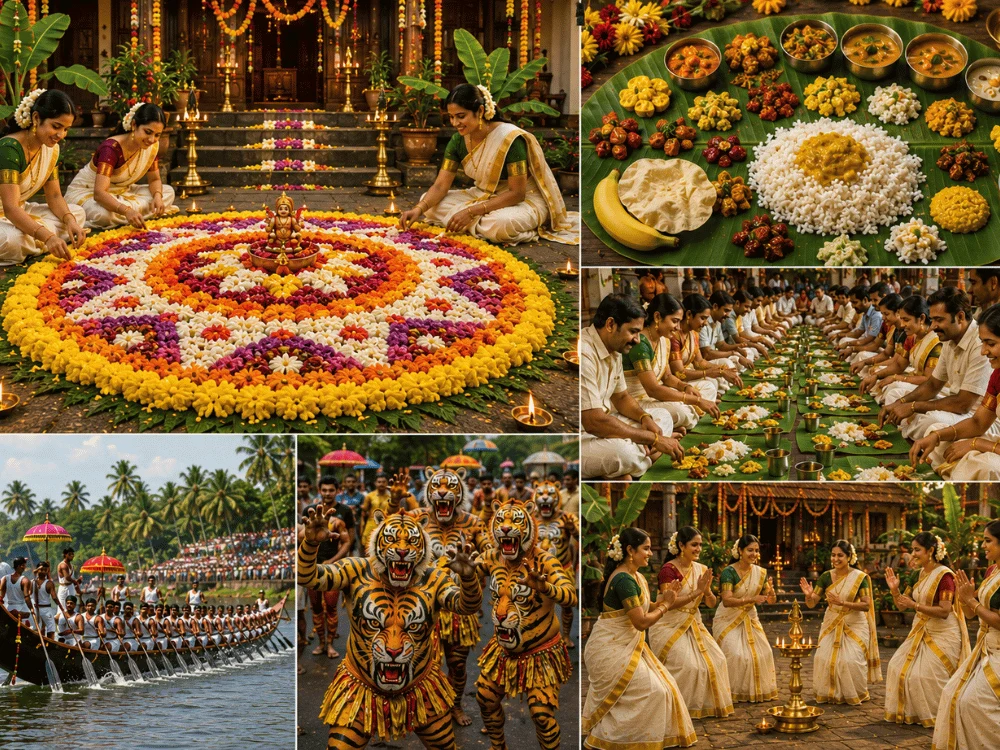

Onam, the national festival of Keralam, is an annual harvest and Hindu cultural festival celebrated mostly by the people of Keralam and is traditionally associated with the legend of the benevolent Asura King Mahabali, who once ruled Keralam, returning each year to visit his people. A major annual event for Malayalis, it is the official festival of the state and includes a spectrum of cultural events